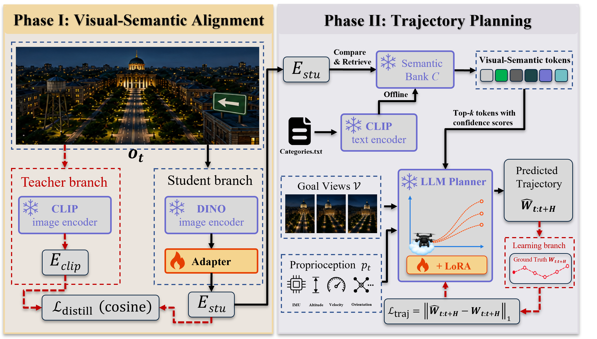

Visual goal specification
The navigation target is defined by terminal goal views rather than a natural-language instruction or a symbolic coordinate.
Vision-only navigation for UAVs
The VoLN-UAV benchmark and the VoLN-MLLM visual-semantic trajectory planner

Abstract
VoLN studies long-horizon UAV navigation in which the goal is specified by terminal visual observations and route guidance must be inferred from visual beacons embedded in the environment. The agent acts from egocentric RGB observations, interaction history, goal views, and proprioception. It receives no episode-level text, GPS signal, global map, symbolic goal coordinate, shortest-path supervision, or preconstructed navigation graph during execution. We introduce the VoLN-UAV benchmark and VoLN-MLLM, a vision-centric planner that aligns DINO representations with CLIP semantics and predicts executable waypoint sequences in closed loop.
Task formulation
VoLN isolates visual-semantic grounding, long-horizon memory, and closed-loop control under a unified vision-only interface.
The navigation target is defined by terminal goal views rather than a natural-language instruction or a symbolic coordinate.
Active visual beacons provide route-relevant evidence, while visually similar passive cues act as semantic distractors.
The policy repeatedly observes, predicts a local 3D waypoint segment and stop signal, executes, and replans from the new state.
VoLN-UAV benchmark
The paper protocol produces 7,210 benchmark episodes after construction. The downloadable dataset separately provides sharded source trajectories, RGB observations, annotations, and metadata used by the construction pipeline.


Reference path length below 300 m.
Reference path length from 300 m to below 450 m.
Reference path length of at least 450 m.
Proposed method
A two-stage visual-semantic alignment and trajectory-planning framework.

Main results
All trained baselines are VoLN-adapted visual-goal variants and use the same observations, waypoint supervision, action interface, stopping rule, and evaluation protocol.
| Method | NE (m) ↓ | SR (%) ↑ | OSR (%) ↑ | nDTW (%) ↑ | SPL (%) ↑ |
|---|---|---|---|---|---|
| Random | 270.1 / 310.4 / 395.2 | 0.4 / 0.0 / 0.0 | 1.4 / 0.6 / 0.2 | 30.1 / – / – | 0.3 / 0.0 / 0.0 |
| Seq2Seq-VG | 208.6 / 254.8 / 309.9 | 1.0 / 0.4 / 0.1 | 4.8 / 2.5 / 0.9 | 28.9 / 21.4 / 13.0 | 0.7 / 0.3 / 0.0 |
| CMA-VG | 174.5 / 216.8 / 266.1 | 1.6 / 0.8 / 0.2 | 6.5 / 3.9 / 1.7 | 33.2 / 26.4 / 18.5 | 1.1 / 0.6 / 0.1 |
| LAG-VG | 122.4 / 158.3 / 206.7 | 2.3 / 1.2 / 0.4 | 6.4 / 3.8 / 1.7 | 28.1 / 20.5 / 14.0 | 1.5 / 0.7 / 0.2 |
| VoLN-MLLM | 97.1 / 131.4 / 176.8 | 7.4 / 4.5 / 1.8 | 14.6 / 10.1 / 4.5 | 53.1 / 41.2 / 28.0 | 5.7 / 3.2 / 1.3 |
Values are Easy / Normal / Hard. Random-policy nDTW for Normal and Hard remains unreported in the current manuscript.
Visual evidence
The physical testbed is a preliminary qualitative feasibility study rather than a large-scale quantitative real-world benchmark.

Resources and reproducibility
The navigation data and simulator environments are hosted separately so that offline training and online AirSim evaluation can be reproduced independently.
Benchmark construction, training, VoLN-adapted baselines, offline metrics, and AirSim evaluation.
Open GitHub repository →Sharded trajectories, RGB frames, split metadata, manifests, and checksums.
Open dataset →Unreal Engine and AirSim environment archives for online evaluation.
Open environments →conda create -n voln-uav python=3.10 -y conda activate voln-uav pip install -r requirement.txt pip install -e .[real] python -m voln_uav.cli.build_benchmark --config configs/benchmark_dataset_release.yaml python scripts/run_dataset_release_pipeline.py --device cuda python -m voln_uav.cli.eval_offline --config configs/eval_offline_dataset_release.yaml --device cuda
Citation
The manuscript is currently under review. Final bibliographic metadata will be added after the review period. Until then, please cite the project by its title, “VoLN: Vision-Only Language-Model-Oriented Navigation,” and link to the project repository.